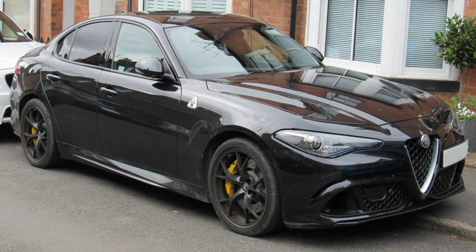
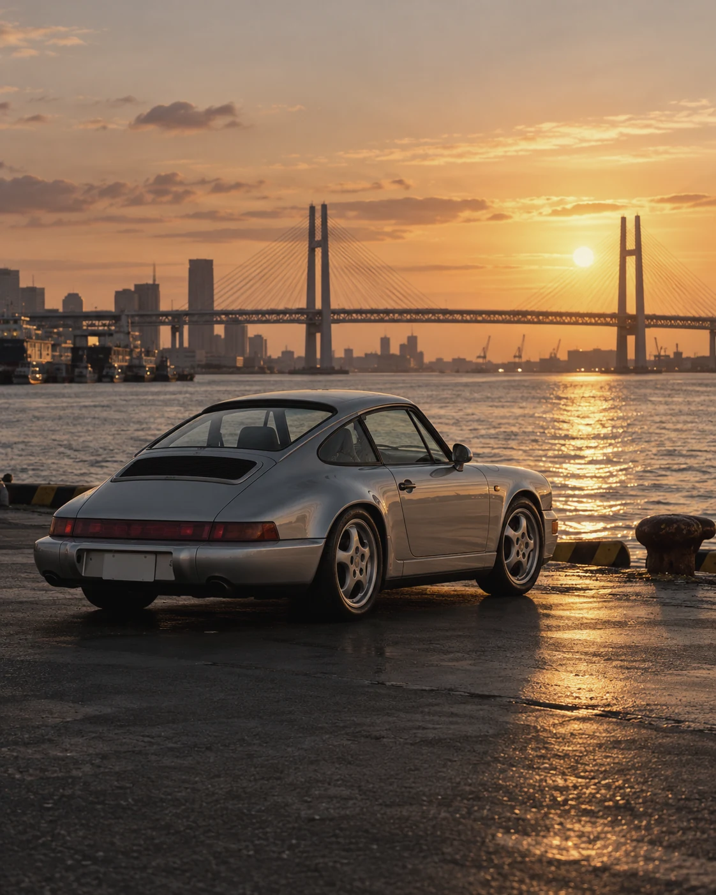

10.27 / BMW GROUP
공장 안에서, 운전자 없이 움직인 100만 대.
BMW는 공장 내 자동 주행 기술로 이동시킨 차량이 누적 100만 대에 도달했다고 발표했다. 옥스퍼드는 네 번째 도입 거점이다.
공장·물류 구역의 자동화에 관한 발표이며, 일반 도로에서의 자율 주행 승인을 의미하지 않는다.
2026.10.27 10:00 CEST 발표 · 본문 대조 10.28 · AI 보조 요약BMW 공식 발표 ↗

공기와 열, 그리고 1980년대의 야심.
한 대의 차에 남은 시대를 읽습니다.
THE WORLD IN MOTION
세계의 자동차 소식을 원문으로 만납니다. 아래는 해외 발행처의 영어 헤드라인입니다.
새로운 발표를 빠르게 읽고,
왜 중요한지도 알아보세요.
BMW는 공장 내 자동 주행 기술로 이동시킨 차량이 누적 100만 대에 도달했다고 발표했다. 옥스퍼드는 네 번째 도입 거점이다.
공장·물류 구역의 자동화에 관한 발표이며, 일반 도로에서의 자율 주행 승인을 의미하지 않는다.
2026.10.27 10:00 CEST 발표 · 본문 대조 10.28 · AI 보조 요약BMW 공식 발표 ↗새로운 비전 모델 Mission S. 브랜드의 다음 디자인 언어와 미드 엔진 슈퍼스포츠카 플랫폼이 향하는 곳.
Porsche Engineering과 Porsche Digital이 ‘Porsche Technologies’로 역량을 모은다. 출범 목표는 2027년 2분기 초다.
왜 중요한가 · 차체 설계와 디지털 경험을 함께 개발하려는 움직임이다. 통합 완료가 아닌 향후 계획으로 읽어야 한다.
공식 본문 대조 · AI 보조 한국어 요약 · 10.28 확인 공식 원문과 일정 확인 ↗위 소식은 날짜가 명시된 공식 발표 해설입니다. 자동 수집된 해외 헤드라인은 뉴스 인덱스에서 별도로 읽습니다.
새로운 소식에서 한 걸음 더. 자동차의 형태와 그것이 놓인 풍경을 들여다봅니다.

그릴과 보닛, 앞바퀴까지. 하나의 얼굴을 만드는 디자인의 관계.
디자인 이야기 읽기 ↗
요코하마를 상상한 자동차와 도시의 시각 에세이.
에세이 읽기 ↗1963년에서 오늘까지.
911의 실루엣이 한 가지 언어로 남는 이유.

기술을 전하고, 형태를 읽고, 문화를 기록합니다.
처음으로